Mechanical keyboard build with custom switches
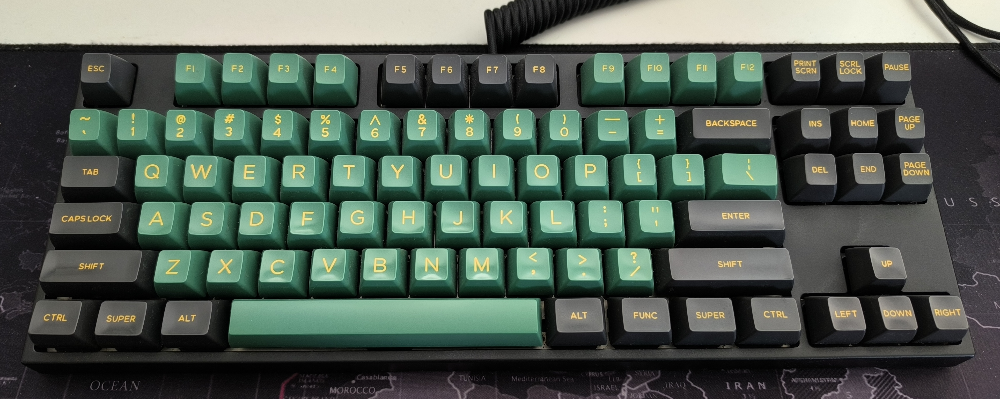
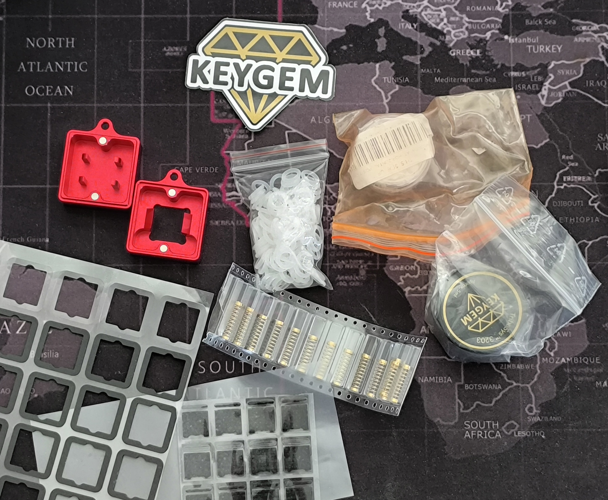
My first custom mechanical keyboard was a kit purchased on Aliexpress for a KPrepublic XD87 Hot Swap board with Gateron brown switches. I had always been very satisfied with it, and assembling it was a great first experience, but over time I realised that the Gateron Brown switches did not offer the level of tactility I was looking for. At one point I also received an entire replacement PCB for a damaged pin that I eventually managed to repair, which left me with two functioning boards. A year later I used that opportunity to give my previous keyboard to my brother and build a new one for myself with switches tailored more closely to my taste. After plenty of research, I gathered all the parts I needed.
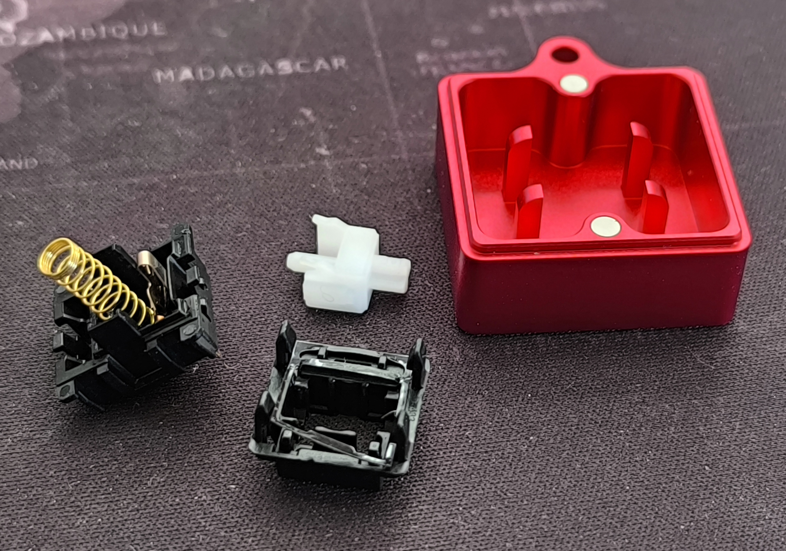
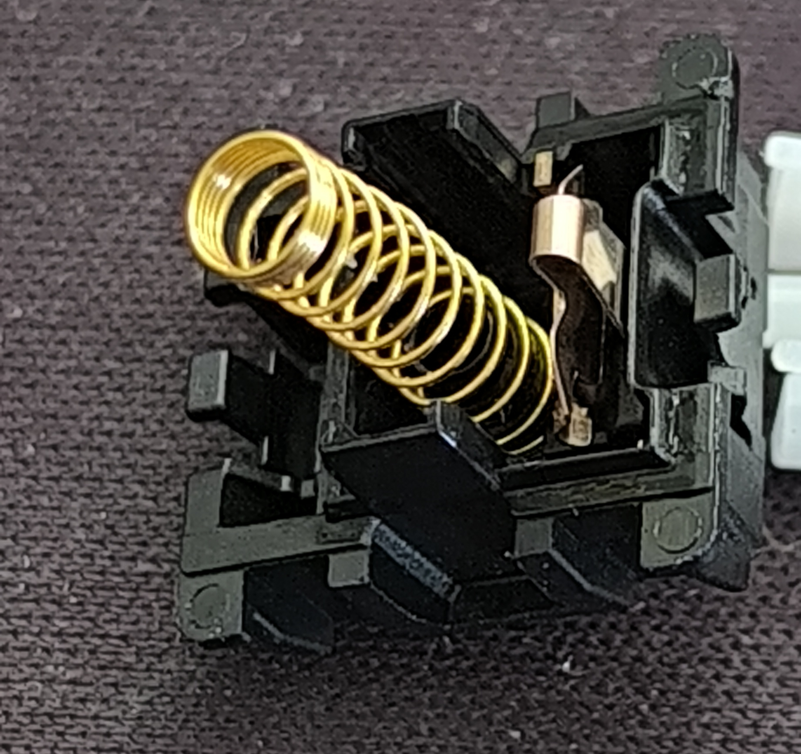
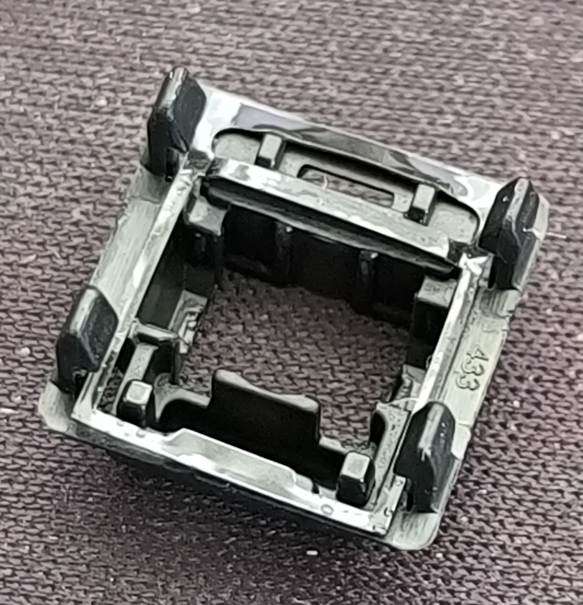
The core of this build was the switches. After a lot of reading, I decided to build a set of so-called Ergo Clears. In practice, that means taking Cherry MX Clear switches and replacing their heavy 100g springs with lighter ones. The idea is to keep the strong tactile bump while reducing the overall spring resistance. In my case, I chose 62g gold-plated springs. Each switch was also lubricated individually with TriboSys 3203 from KEYGEM and fitted with a 0.2mm Switch Foam pad by KBDfans to reduce noise. The process itself is fairly straightforward, but it still had to be repeated roughly 100 times. The keyboard only uses 87 switches, but I converted the entire batch.
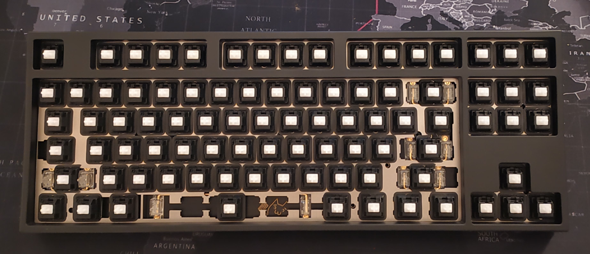
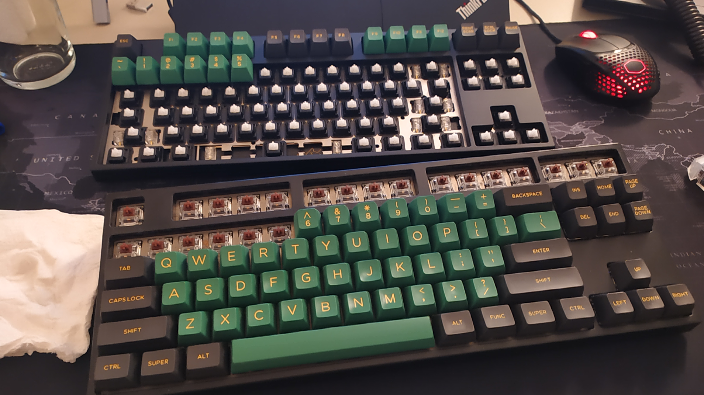
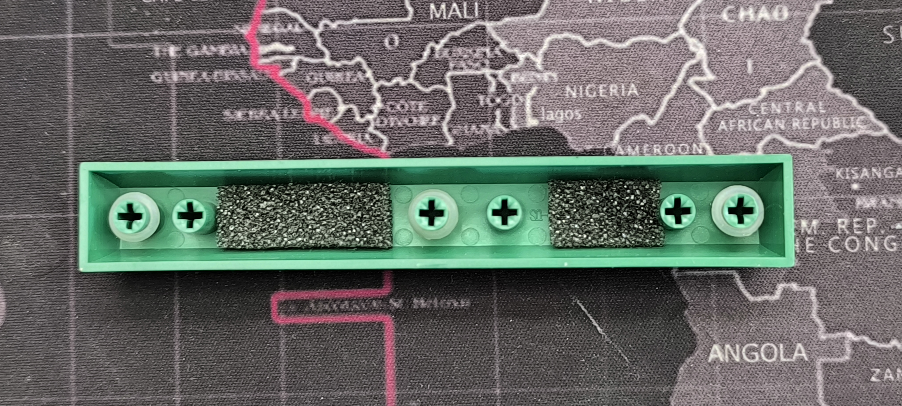
Once the switches were ready, I moved on to assembling the keyboard itself. To further reduce noise, I applied 0.4mm KPrepublic poron foam plate pads under each switch. I also installed a set of Everglide transparent gold-plated PCB screw-in stabilizers and lubricated them before fitting the keycaps. Since my brother bought his own keycap set, I was able to keep mine and move them onto the new build. After some testing, I was very happy with both the tactility and the overall sound, but the spacebar still stood out badly and rang like a gong. I eventually brought it much closer to the rest of the board by gluing packing foam into the hollow section and adding rubber O-rings on the stems.
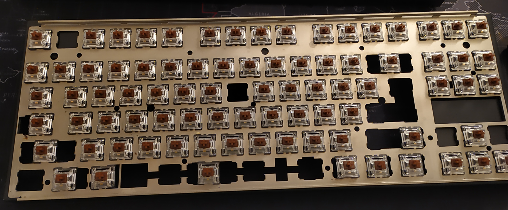
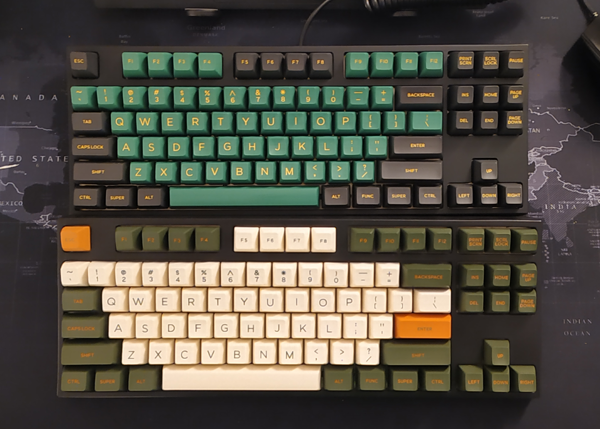
My previous keyboard also got a deep clean before receiving its new set of keycaps.
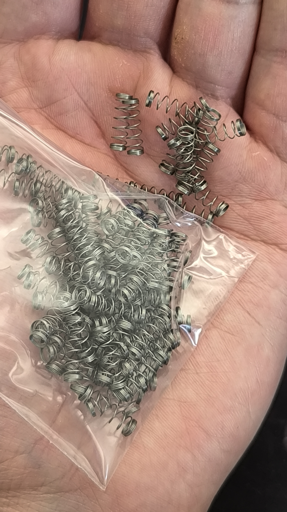
In the end, I was left with around 100 heavy springs, which may still find their way into another project someday.
The assembly was simple overall, even if it was undeniably time-consuming. I am still very satisfied with the final feel of these switches. At the time, an equivalent tactile switch with the same spring weight would have cost more than 2 EUR per switch. This build ended up being far cheaper than that while also letting me choose the exact springs and lubricants I wanted.